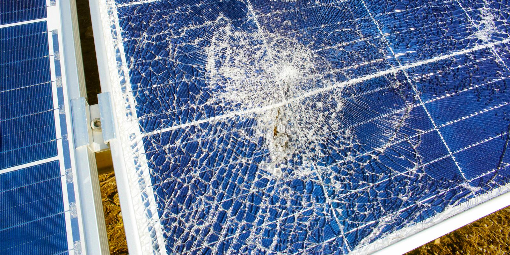

Manutenção
 Durabilidade
Durabilidade
Durabilidade
Durabilidade
cuidados que são importantes:
Ainda assim é muito importante estar atento aos sinais de deterioração dos módulos. Você pode analisar os seguintes pontos:
Tipos Materiais:
qual seria a durabilidade de um painel solar? Por quantos anos esse equipamento consegue funcionar adequadamente sem ser trocado? Indo direto ao ponto, a vida útil de um painel solar é de 25 a 30 anos, esse é o prazo que as fabricantes costumam dar como garantia.
